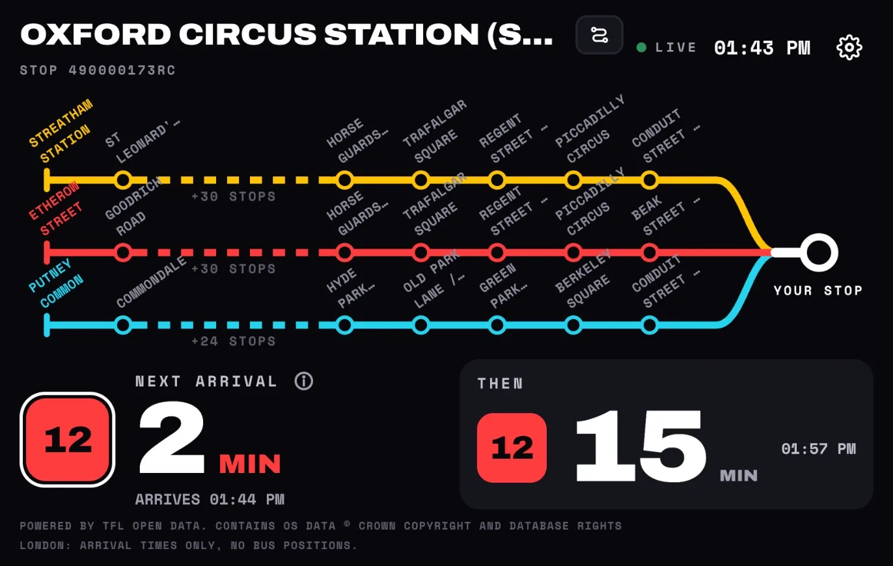

Home Assistant
Your bus stop on your dashboard
The My Bus Stop card puts the board on a Home Assistant dashboard: the next bus at your stop, the one after it, and the route map. It's free, with no account and no API key.

Install the card
The button opens My Home Assistant, which sends you on to your own Home Assistant. When it asks to add the repository, select Add, then select Install. The first time, Home Assistant asks you to connect a GitHub account. If the button doesn't get you there, follow the steps below.
Home Assistant 2026.11 or later
HACS is built in from this version, as the Marketplace.
- Go to Settings → Marketplace. In the upper-right corner, select Add from link.
- Under GitHub link, enter
https://github.com/hayek/my-bus-stop-cardand select Add. If it asks for the type, choose Dashboards and select Add again. - On the My Bus Stop page, select Install, check the version, then select Install again.
- Reload the page in your browser. In the Home Assistant app, pull down to refresh, or close and reopen it.
Home Assistant 2026.10 or earlier, with HACS
- Open HACS in the sidebar. Go to the ⋮ menu in the top corner and choose Custom repositories.
- Under Repository, enter
https://github.com/hayek/my-bus-stop-card. Under Type, choose Dashboard. Click Add, then close the window. - Search HACS for My Bus Stop, open it and click Download.
- Reload the page in your browser, or pull down to refresh in the Home Assistant app.
Add it to a dashboard
- Open a dashboard, click the pencil to edit it, then click Add card. Search for My Bus Stop and choose it.
- The card editor shows the stop picker. Choose your region, then search for your stop by name or code, or tap Find stops near me.
- Tick up to three lines and press Use these lines. The preview beside the editor switches to your board.
- Click Save.
To change the lines later, edit the card: the editor opens on your stop with its lines ticked. Tap Back there to choose another stop. For more than one stop, add one card for each.
Options
The editor sets these for you, or you can write them in the card's YAML:
| Option | What it does |
|---|---|
theme | auto (the default) follows the dashboard's light or dark mode. light and dark keep one, and system follows the device. |
height | The card's height in pixels in masonry and stack layouts. The default is 540. In a sections or panel view, the card fills the space it's given, so resize it there instead. |
board | Your stop and lines. The editor fills it in; there's no need to type it. |
url | Instead of board: a link from ⚙ → Copy link to this board in the web version. |
type: custom:my-bus-stop-card
url: https://amirhayek.dev/MyBusStop/web/#b=z…
theme: darkThe board fits the card's size. When the card is short, the second bus goes first, then the map, and the minutes to the next bus always stay. A wide card shows both buses side by side.
Without installing anything
Home Assistant's built-in Webpage card can show a board too, with nothing to install:
- Open My Bus Stop on the web, choose your stop and lines, then choose ⚙ → Copy link to this board.
- In the link, add
?embed=1just before the#, so it reads…/MyBusStop/web/?embed=1#b=…. This shows the board on its own and saves nothing in the browser. To keep it dark, use?embed=1&theme=dark. - Add a Webpage card with that link, or add the same link as a whole dashboard: Settings → Dashboards → Add dashboard → Webpage.
type: iframe
url: https://amirhayek.dev/MyBusStop/web/?embed=1&theme=dark#b=z…
aspect_ratio: 100%
allow: fullscreen; screen-wake-lockOn a wall tablet
Give the card a dashboard view of its own with the Panel layout, and it fills the whole screen: a bus board for a tablet by the front door. Set the card's theme to dark to keep it dark at night. To keep the screen on, use the tablet's own setting or a kiosk browser.
Where it works
Everywhere the web version runs: Israel, Norway, London, Switzerland, Turku, Tampere, the Lisbon area, Rennes, Brussels, Nuremberg, Boston, Minneapolis–St Paul, Toronto, Tokyo and Hong Kong, with live bus positions where the agency shares them. Anywhere else, arrival times come from Transitous, a community service built on transit agencies' open data.
Privacy
- The card sends nothing about your home, your devices or your Home Assistant anywhere.
- Your stop and lines are kept in the card's settings on your Home Assistant. They reach the web version only inside the link, after the
#, which browsers never send to a server, so the site and its analytics never see them. - Arrival times come straight from each transit agency to the browser showing the dashboard. Israel is the one exception: its requests pass through a relay that holds no data about you.
- Find stops near me uses your location once, only if you allow it, and never stores it.
The privacy policy has the details.
Something not working?
- "Custom element doesn't exist: my-bus-stop-card". The browser still has the old page. Reload it. In the Home Assistant app, use Reset frontend cache in the app's settings.
- The card is blank. Make sure the device showing the dashboard is online and can open amirhayek.dev.
- Find stops near me does nothing. The browser or app needs location permission. You can always search by name instead.
Report a problem or suggest something on GitHub. The card's code is open, under the MIT licence.